BSc Engineering — 3-hour lecture
2026-05-15
By the end of today you will be able to:
Block 1 — Markov Decision Processes · 45 min
☕ break · 10 min
Block 2 — Returns, value functions, Bellman equations · 50 min
☕ break · 10 min
Block 3 — \(\varepsilon\)-greedy, SARSA, Q-learning teaser · 50 min
Block 4 — Wrap-up · 10 min
. . .
The question. What is the best plan? And how could the robot learn one without being told the rules?
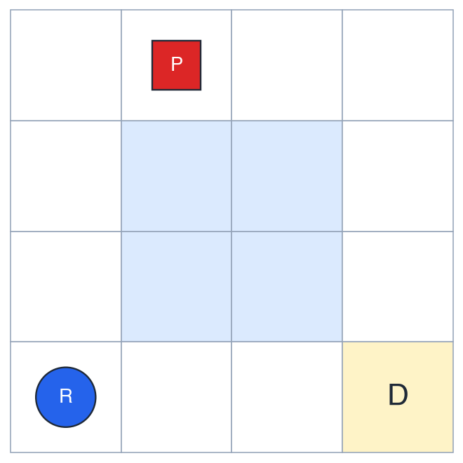
We need a formalism that captures all three. Enter the Markov Decision Process.
Intuition. The current state is a sufficient statistic of the past — given \(S_t\), knowing \(S_{t-1}, S_{t-2}, \dots\) adds nothing.
Formally: \[ \begin{aligned} &\Pr\!\left[\,S_{t+1} = s' \,\big|\, S_0, A_0, \dots, S_t = s, A_t = a\,\right] \\[2pt] &\qquad\qquad =\; \Pr\!\left[\,S_{t+1} = s' \,\big|\, S_t = s, A_t = a\,\right] \end{aligned} \]
Sticky point
A restriction on the state, not on the process. If you need the past, fold it into the state.
Random variables, realizations
| Symbol | Meaning |
|---|---|
| \(S_t,\ A_t\) | random state and action at step \(t\) |
| \(R_{t+1}\) | random reward after \(A_t\) in \(S_t\) |
| \(s,\ a,\ r\) | realizations / dummy variables |
Value functions, hyperparameters
| Symbol | Meaning |
|---|---|
| \(v_\pi,\ q_\pi\) | true value functions under \(\pi\) |
| \(V,\ Q\) | estimates (what algorithms update) |
| \(\pi\) | policy |
| \(\gamma,\,\alpha,\,\varepsilon\) | discount, step size, exploration |
Sticky point
Reward is indexed \(t+1\), not \(t\). Standard Sutton & Barto convention.
| Symbol | Name | Type |
|---|---|---|
| \(\mathcal{S}\) | state space | a set |
| \(\mathcal{A}\) | action space | a set |
| \(P\) | transition kernel | \(\mathcal{S} \times \mathcal{A} \to \Delta(\mathcal{S})\) |
| \(R\) | reward function | \(\mathcal{S} \times \mathcal{A} \times \mathcal{S} \to \mathbb{R}\) |
| \(\gamma\) | discount factor | scalar in \([0, 1]\) |
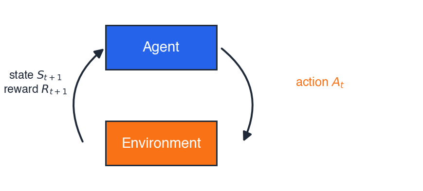
Everything the agent needs to know to act.
Warehouse robot, partial list:
Total: \(|\mathcal{S}| = 16 \times 2 \times (B_{\max}+1)\).
The state is whatever makes the Markov property hold for your problem.
What the agent can choose at each step.
Warehouse robot:
\[ \mathcal{A} = \{\,\text{N},\ \text{S},\ \text{E},\ \text{W},\ \text{pick-up},\ \text{drop}\,\} \]
Action availability can depend on the state — pick-up only makes sense on the package cell. We model this either by giving an action-set \(\mathcal{A}(s)\) per state, or by allowing the action everywhere and giving illegal cases a large negative reward.
\[ P(s' \mid s, a) \;=\; \Pr\!\left[\,S_{t+1} = s' \,\big|\, S_t = s,\ A_t = a\,\right] \]
A probability distribution over next states. Sums to \(1\) over \(s'\).
Warehouse step (slippery floor): intended N happens 80 %; left- and right-slips happen 10 % each.
Warning
In the real world we do not know \(P\). That is the whole reason today’s lecture exists.
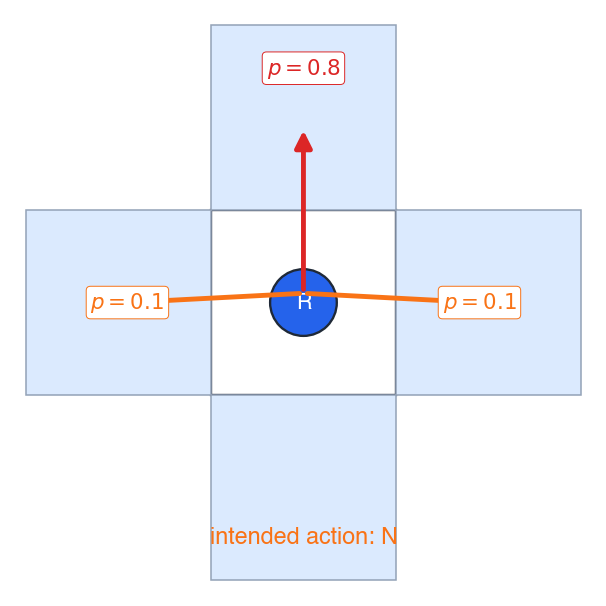
\[ R(s, a, s') \;=\; \text{scalar reward observed when } s \xrightarrow{a} s' \]
Warehouse rewards:
Tip
The reward signal communicates what you want — not how you want it achieved. Sutton & Barto §3.2
Sub-rewards like “+1 for moving north” often teach the agent the wrong skill.
\(\gamma \in [0,\ 1]\) — future rewards are discounted by \(\gamma\) per step. Battery now \(>\) battery in five steps; keeps infinite-horizon sums finite.
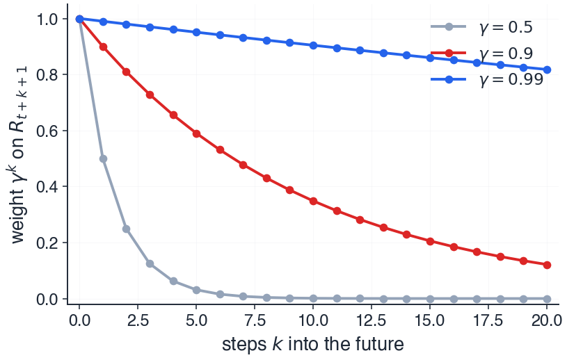
Pre-empt
A large \(\gamma\) does not mean short-term focus — \(\gamma\) close to \(1\) makes the agent patient.
A trajectory is the sequence the MDP generates:
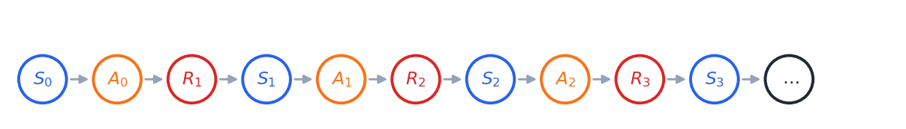
An episode is a trajectory that ends in a terminal state.
Warehouse: an episode ends when the package is delivered, or the battery dies.
Stochastic: \(\pi(a \mid s) = \Pr[A_t = a \mid S_t = s]\) · Deterministic: \(\pi(s) = a\)
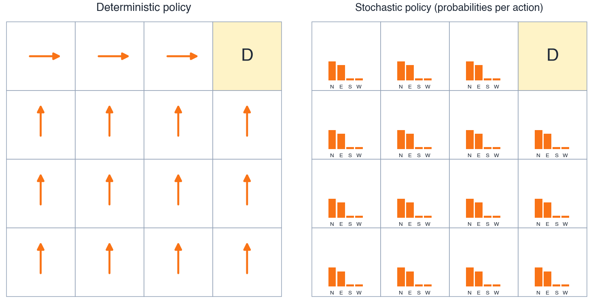
We will see soon why we sometimes want stochastic policies — to explore.
Pair work — 3 min
A battery-powered shuttle moves along a one-way 3-stop bus route. At each stop it can wait (passengers may board) or depart. Each passenger carried gives reward \(+5\); each minute waiting costs \(-1\); arriving at the depot ends the episode.
\(\mathcal{S}\): \((\text{stop} \in \{0,1,2\},\ \text{passengers} \in \mathbb{N}_0,\ \text{minute} \in \mathbb{N}_0)\) — the state must contain enough to decide.
\(\mathcal{A}\): \(\{\text{wait},\ \text{depart}\}\).
Trajectory (one example): \((0, 0, 0) \xrightarrow{\text{wait}}_{R=-1} (0, 1, 1) \xrightarrow{\text{depart}}_{R=+5} (1, 0, 2) \xrightarrow{\text{wait}}_{R=-1} (1, 1, 3)\)
Deterministic policy: “depart whenever passenger count \(\geq 1\); otherwise wait.”
Warning
Common error. Confusing the trajectory (what happened) with the policy (the decision rule that produced it).
The undiscounted return: \[ G_t \;=\; R_{t+1} + R_{t+2} + R_{t+3} + \dots \]
Two problems:
The discounted return: \[ G_t \;=\; R_{t+1} + \gamma R_{t+2} + \gamma^2 R_{t+3} + \dots \;=\; \sum_{k=0}^{\infty} \gamma^k R_{t+k+1} \]
For \(\gamma < 1\) and bounded rewards, the sum is always finite.
The return \(G_t\) is random:
Two trajectories from the same starting state can give wildly different \(G_t\). We need a single number per state to compare policies.
Solution. Take the expected value: \[ \text{value} \;:=\; \mathbb{E}_\pi[\,G_t \mid \text{starting situation}\,] \]
The subscript \(\pi\) means: “expectation over trajectories generated by following policy \(\pi\).”
The expected return if you start in \(s\) and follow \(\pi\) forever after:
\[ \boxed{\;v_\pi(s) \;:=\; \mathbb{E}_\pi[\,G_t \mid S_t = s\,]\;} \]
Warehouse: “Value of being in this cell, given my current policy.”
Sticky
Lowercase \(v_\pi\) = the true function (a property of the MDP and \(\pi\)). Uppercase \(V\) = our estimate (what algorithms compute).
The expected return if you start in \(s\), take action \(a\), and follow \(\pi\) forever after:
\[ \boxed{\;q_\pi(s, a) \;:=\; \mathbb{E}_\pi[\,G_t \mid S_t = s,\ A_t = a\,]\;} \]
The first action is overridden; everything after that follows \(\pi\).
Important
\(q_\pi\) is the protagonist of the rest of the lecture. SARSA estimates \(Q \approx q_\pi\).
The two are linked through the policy:
\[ \boxed{\;v_\pi(s) \;=\; \sum_a \pi(a \mid s)\, q_\pi(s, a)\;} \]
In words. The value of a state under \(\pi\) is the policy-weighted average of its action-values at that state.
A consequence: if you have \(q_\pi\), you have \(v_\pi\) for free.
Start from the recursive form of the return: \[ G_t \;=\; R_{t+1} + \gamma\, G_{t+1} \]
Plug into the definition of \(v_\pi\): \[ v_\pi(s) \;=\; \mathbb{E}_\pi[\,R_{t+1} + \gamma\, G_{t+1} \mid S_t = s\,] \]
Linearity of expectation: \[ v_\pi(s) \;=\; \mathbb{E}_\pi[R_{t+1} \mid S_t = s] \;+\; \gamma\, \mathbb{E}_\pi[G_{t+1} \mid S_t = s] \]
Condition on the action and the next state. By the Markov property, \(\mathbb{E}_\pi[G_{t+1} \mid S_{t+1} = s']\) is just \(v_\pi(s')\):
\[ \mathbb{E}_\pi[G_{t+1} \mid S_t = s] \;=\; \sum_a \pi(a \mid s) \sum_{s'} P(s' \mid s, a)\, v_\pi(s') \]
Same conditioning for the immediate reward: \[ \mathbb{E}_\pi[R_{t+1} \mid S_t = s] \;=\; \sum_a \pi(a \mid s) \sum_{s'} P(s' \mid s, a)\, R(s, a, s') \]
Combine — and we get the equation on the next slide.
\[ \boxed{\;v_\pi(s) \;=\; \sum_a \pi(a \mid s) \sum_{s'} P(s' \mid s, a) \Bigl[\, R(s,a,s') + \gamma\, v_\pi(s') \,\Bigr]\;} \]
Reading. Take an action under \(\pi\) → observe \((r, s')\) → receive \(r\), then the value of where you land — averaged over everything random.
A self-consistency equation: \(v_\pi\) appears on both sides.
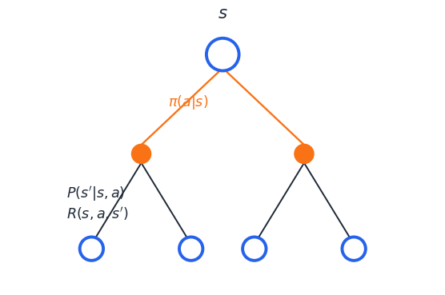
\[ \boxed{\;q_\pi(s, a) \;=\; \sum_{s'} P(s' \mid s, a) \Bigl[\, R(s,a,s') + \gamma\, \textstyle\sum_{a'} \pi(a' \mid s')\, q_\pi(s', a') \,\Bigr]\;} \]
THIS is the equation SARSA samples
The inner structure \(r + \gamma\, q_\pi(s', a')\) for the next \((s', a')\) is exactly the \((S, A, R, S', A')\) tuple SARSA collects.
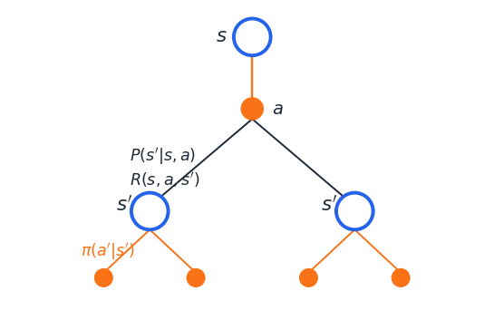
3-state chain. Actions left, right. Deterministic transitions; step cost \(-1\); entering terminal \(T\) gives \(+10\); \(\gamma = 0.9\); policy \(\pi\) = always right.
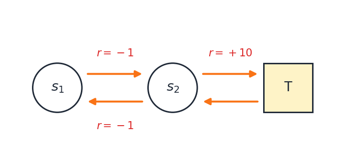
Bellman expectation chains back: \[ \begin{aligned} q_\pi(s_2, \mathrm{right}) &= +10 \\ q_\pi(s_1, \mathrm{right}) &= -1 + \gamma\, q_\pi(s_2, \mathrm{right}) \\ q_\pi(s_2, \mathrm{left}) &= -1 + \gamma\, q_\pi(s_1, \mathrm{right}) \end{aligned} \]
| \((s, a)\) | \(q_\pi\) |
|---|---|
| \((s_2, \mathrm{right})\) | \(+10\) |
| \((s_1, \mathrm{right})\) | \(+8\) |
| \((s_2, \mathrm{left})\) | \(+6.2\) |
Only possible because we knew \(P, R\).
The optimal value functions: \[ v_*(s) = \max_\pi v_\pi(s),\quad q_*(s,a) = \max_\pi q_\pi(s, a) \]
There is always a deterministic optimal policy \(\pi_*\): \[ q_*(s, a) = \sum_{s'} P(s'|s,a) \bigl[ R + \gamma \max_{a'} q_*(s', a') \bigr] \]
Only difference vs. expectation: \(\sum_{a'} \pi(a'|s') \to \max_{a'}\). The rest of the lecture estimates \(q_\pi\) for a gradually-improving policy.
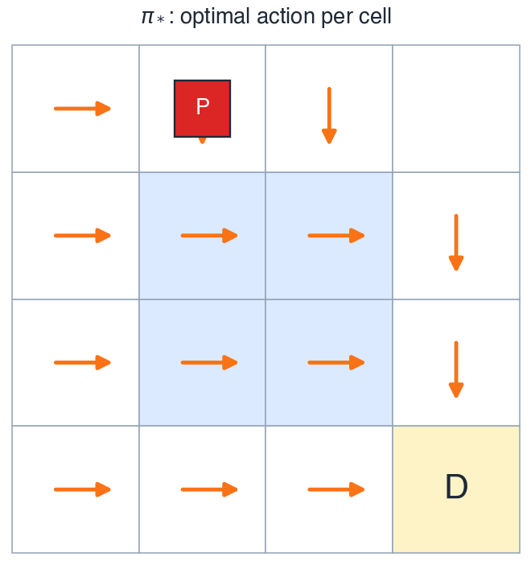
To solve the Bellman equations directly, we need \(P\) and \(R\) explicitly. Real engineering problems rarely give us either — slip probabilities, contact dynamics, transition kernels are all unknown or approximate.
Three families of solutions:
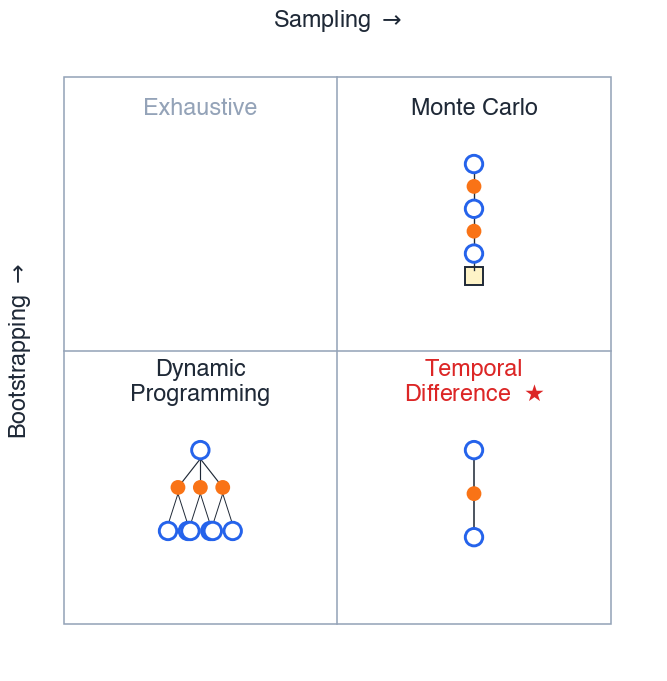
To act greedily, we need \(\arg\max_a\).
With \(V(s)\): \[ \arg\max_a \sum_{s'} P(s'|s, a) \bigl[\, R + \gamma V(s') \,\bigr] \] Needs \(P, R\). Model-based.
With \(Q(s, a)\): \[ \arg\max_a Q(s, a) \] Just look up the table. Model-free.
Important
This is the reason SARSA estimates \(q_\pi\) instead of \(v_\pi\).
Pair work — 3 min
The warehouse robot is in cell \((2, 1)\), holding the package, and considers action N.
The slip model is the standard \(80/10/10\). Going N:
Each move costs \(-1\). The policy \(\pi\) is “always go N until at the depot.”
Write the Bellman expectation equation for \(q_\pi\bigl((2,1,\text{has-pkg},\text{batt}=7),\, \mathrm{N}\bigr)\).
Apply the boxed Bellman equation. With \(\pi\) deterministic (\(\pi(s') = \mathrm{N}\) for every landing state) the inner sum collapses to a single term, and the step cost \(-1\) factors out:
\[ q_\pi(s, \mathrm{N}) \;=\; -1 + \gamma \Bigl[\, 0.8\, q_\pi(s_N, \mathrm{N}) \,+\, 0.1\, q_\pi(s_W, \mathrm{N}) \,+\, 0.1\, q_\pi(s_E, \mathrm{N}) \,\Bigr] \]
Watch for
(1) Dropping the \(\pi(a'|s')\) weighting (matters once \(\pi\) is stochastic). (2) Double-counting the reward inside the inner sum. (3) Taking \(\max_{a'}\) — that’s Q-learning, not Bellman expectation for \(q_\pi\).
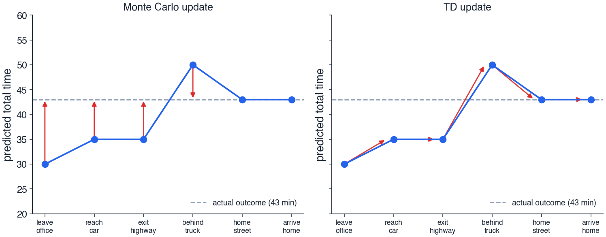
Important
MC waits for the trip to end before correcting any estimate. TD corrects each estimate the moment the next one moves. That is bootstrapping — and you don’t need an MDP to feel it.
To turn the Bellman expectation equation for \(q_\pi\):
\[ q_\pi(s,a) \;=\; \sum_{s'} P(s'|s,a) \Bigl[ R(s,a,s') + \gamma \sum_{a'} \pi(a'|s')\, q_\pi(s', a') \Bigr] \]
into something we can learn from experience, we make two substitutions.
Idea 1 — Sampling. Replace the expectations \(\sum_{s'} P,\ \sum_{a'} \pi\) by single observed samples.
Idea 2 — Bootstrapping. Replace the unknown \(q_\pi(s', a')\) by our current estimate \(Q(s', a')\).
The next two slides go deep on each idea.
Bellman has \(\sum_{s'} P(s'|s,a)\cdot[\dots]\) — an expectation we cannot compute (we don’t know \(P\)).
But the environment hands us a sample \(s'\) every time we take action \(a\) in state \(s\).
Trick. Replace the expectation by one observed transition: \[ \mathbb{E}[X] \;\approx\; X^{\,\text{(observed)}} \]
Same idea applies to the inner \(\sum_{a'} \pi(a'|s')\): just take one action \(a'\) ourselves.
The Bellman expression contains \(q_\pi(s', a')\) — a quantity we don’t know.
But we have an estimate \(Q(s', a')\). Use it.
Tip
TD updates a guess towards a guess. — David Silver, UCL Lecture 4
Yes, the target is a guess. Yes, it’s biased. But it gets better as \(Q\) improves — the algorithm bootstraps itself.
Putting both ideas together:
\[ \boxed{\;Q(s, a) \;\leftarrow\; Q(s, a) \;+\; \alpha\, \Bigl[\, \underbrace{r + \gamma\, Q(s', a')}_{\text{TD target}} \;-\; \underbrace{Q(s, a)}_{\text{current estimate}}\, \Bigr]\;} \]
The bracketed quantity is the TD error: \[ \delta \;=\; r + \gamma\, Q(s', a') \;-\; Q(s, a) \]
Reading. Nudge the estimate \(Q(s, a)\) a fraction \(\alpha\) of the way toward what Bellman would say if we trusted our current estimates and one observed transition.
Acting greedily with \(Q \equiv 0\) initially. Ties broken by action order \(\mathrm{N} \prec \mathrm{S} \prec \mathrm{E} \prec \mathrm{W}\).
Step 1. All \(Q\)s tied at \(0\) → robot picks \(\mathrm{N}\) → step cost \(-1\) → \(Q(\text{start}, \mathrm{N}) = -0.5\).
Step 2. \(Q(\text{start}, \mathrm{N}) = -0.5\) is now worst. Greedy picks the next-tied action \(\mathrm{S}\) → after the update it too goes negative.
Warning
The robot never tries \(\mathrm{E}\) or pick-up long enough to discover reward. \(Q\) for those stays at \(0\), so they “look good” forever — but never get a real chance.
The fix is to occasionally pick a non-greedy action.
That is the role of \(\varepsilon\)-greedy on the next slide.
\[ A_t \;=\; \begin{cases} \arg\max_a Q(S_t, a) & \text{with prob.\ } 1 - \varepsilon \\ \text{uniform random} & \text{with prob.\ } \varepsilon \end{cases} \]
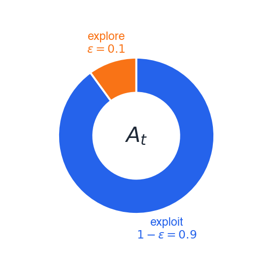
| \(\varepsilon\) | behaviour |
|---|---|
| \(0\) | pure exploit — catastrophe (last slide) |
| \(1\) | pure random walk — no learning |
| \(0.1\) | typical default |
Constant \(\varepsilon\) — simple, but the policy stays forever stochastic and never reaches the optimum.
Decaying \(\varepsilon\) (\(\varepsilon_t = 1/t\), exponential, …) — explore early, exploit late.
GLIE
Greedy in the Limit with Infinite Exploration: visit every \((s, a)\) infinitely often AND become greedy in the limit. The formal condition for SARSA to converge to the optimal policy.
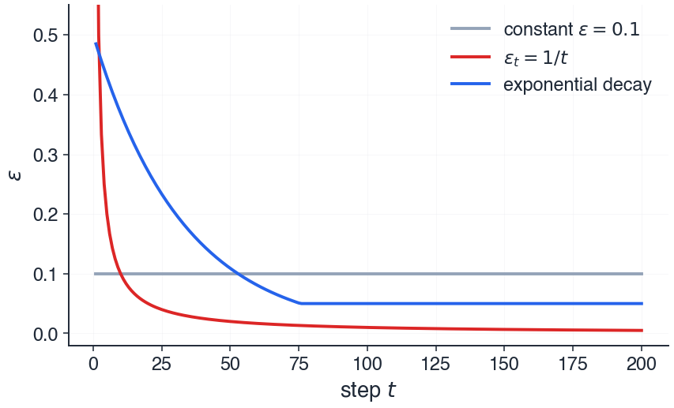
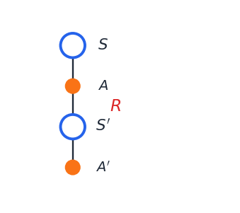
Important
The chain is the algorithm.
The five elements of the chain:
\[ \Bigl( \;\mathbf{S},\;\; \mathbf{A},\;\; \mathbf{R},\;\; \mathbf{S}',\;\; \mathbf{A}'\; \Bigr) \]
Tip
“This quintuple gives rise to the name Sarsa for the algorithm.” — Sutton & Barto, §6.4
The name IS the mnemonic.
Initialize Q(s, a) arbitrarily for all s, a; set Q(terminal, ·) = 0
Choose hyperparameters α ∈ (0, 1], γ ∈ [0, 1], ε ∈ [0, 1]
Repeat (for each episode):
S ← initial state of the episode
A ← ε-greedy(Q, S)
Repeat (for each step of episode):
Take action A; observe R, S'
A' ← ε-greedy(Q, S')
Q(S, A) ← Q(S, A) + α [ R + γ Q(S', A') − Q(S, A) ]
S ← S'
A ← A'
until S is terminalImportant
Every symbol on this slide has appeared on a previous slide. We have arrived.
Each cell is quartered — one triangle per action \(\{N, S, E, W\}\). Number in each triangle = \(Q(s, a)\).
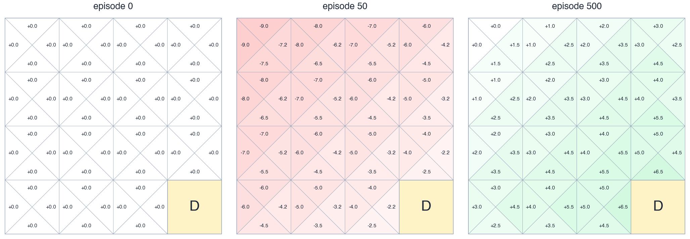
Cells near the depot acquire high values first; value flows backwards from the depot through the gridworld.
Setup. Robot at \((0, 0)\), no package, full battery. \(Q \equiv 0\). \(\alpha = 0.5\), \(\gamma = 0.9\), \(\varepsilon = 0.1\).
Step 1. \(A = \mathrm{N}\) (greedy, tie-break order). Bumps wall: \(S' = (0,0)\), \(R = -1\). \(A' = \mathrm{S}\) (next tie). \[Q((0,0),\mathrm{N}) \;\leftarrow\; 0 + 0.5\,[-1 + 0.9 \cdot 0 - 0] \;=\; -0.5\]
Step 2. \(A = \mathrm{S}\). Lands at \((0, 1)\), \(R = -1\). \(A' = \mathrm{N}\). \[Q((0,0),\mathrm{S}) \;\leftarrow\; 0 + 0.5\,[-1 + 0.9 \cdot 0 - 0] \;=\; -0.5\]
Step 3. Robot at \((0, 1)\). \(A = \mathrm{N}\) (all \(Q\)s here still \(0\)). Lands at \((0, 0)\). \(R = -1\). At \((0,0)\) now, \(\mathrm{E}\) is the highest action (\(\mathrm{N}, \mathrm{S}\) are at \(-0.5\)). \(A' = \mathrm{E}\). \[Q((0,1),\mathrm{N}) \;\leftarrow\; 0 + 0.5\,[-1 + 0.9 \cdot 0 - 0] \;=\; -0.5\]
Note
With \(Q \equiv 0\) and step cost \(-1\), every step makes the chosen action look worse — so greedy naturally keeps switching, even without \(\varepsilon\). SARSA is learning that nothing has worked yet.
Sutton & Barto, §6.4
SARSA converges with probability 1 to an optimal policy and action-value function as long as all state–action pairs are visited an infinite number of times and the policy converges in the limit to the greedy policy (which can be arranged, for example, with \(\varepsilon\)-greedy policies by setting \(\varepsilon = 1/t\)).
Two conditions, no proof today:
“With probability 1” = almost-sure convergence, in the measure-theoretic sense — same notion you saw in your stochastic processes course.
\(7 \times 10\) grid. Wind blows the agent upward by 1 or 2 cells in middle columns, regardless of action. Start S, goal G. Step cost \(-1\).
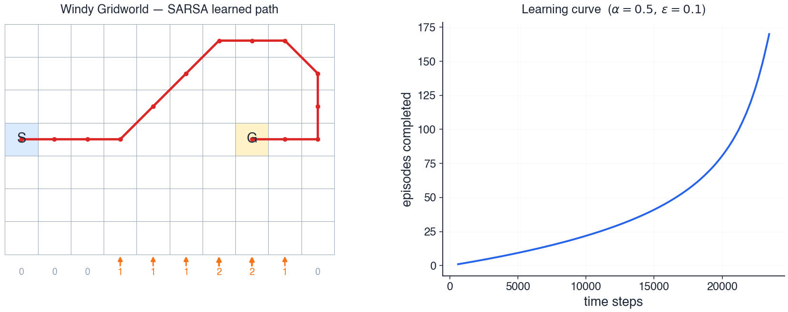
SARSA with \(\alpha = 0.5\), \(\varepsilon = 0.1\) stabilises at \(\sim 17\) steps; optimal is \(15\) — the extra \(2\) are the cost of exploration.
Cliff on bottom row: stepping in gives \(R = -100\) + reset. Every other step: \(R = -1\).
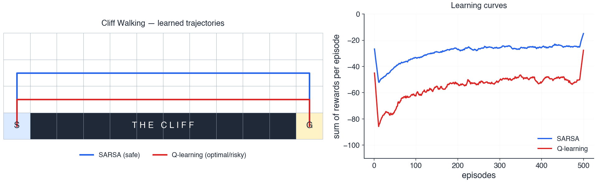
The punchline
SARSA learns about the policy it’s actually following. Q-learning learns about the policy it wishes it could follow.
Pair work — 3 min
Hyperparameters. \(\alpha = 0.1\), \(\gamma = 0.9\).
Q-table (only what you need):
\[ Q(s_2, \mathrm{right}) = 5.0 \qquad Q(s_3, \mathrm{left}) = 2.0 \]
One observed transition:
\[ S = s_2,\; A = \mathrm{right},\; R = -1,\; S' = s_3,\; A' = \mathrm{left} \]
Compute the new \(Q(s_2, \mathrm{right})\).
Plug into the SARSA update and simplify: \[ \begin{aligned} Q(s_2, \mathrm{right}) &\leftarrow\; Q(s_2, \mathrm{right}) + \alpha\, \bigl[\, R + \gamma\, Q(s_3, \mathrm{left}) - Q(s_2, \mathrm{right})\, \bigr] \\[2pt] &=\; 5.0 + 0.1 \cdot [\, -1 + 0.9 \cdot 2.0 - 5.0\, ] \\[2pt] &=\; 5.0 + 0.1 \cdot (-4.2) \end{aligned} \]
\[ \boxed{\;Q(s_2, \mathrm{right}) \;=\; 4.58\;} \]
Common errors
(1) Using \(\max_{a'}\) — that’s Q-learning. (2) Treating \(Q(S,A)\) on the RHS as the just-updated value. (3) Reading \(\gamma\, Q(s', a')\) as \(\gamma + Q(s', a')\).
\[ \underbrace{\langle \mathcal{S}, \mathcal{A}, P, R, \gamma \rangle}_{\text{MDP}} \;\xrightarrow{\;\text{policy value}\;}\; q_\pi \;\xrightarrow{\;P, R \text{ unknown}\;}\; \underbrace{\text{sample} + \text{bootstrap}}_{\text{TD update}} \]
\[ \xrightarrow{\;\text{must explore}\;}\; \underbrace{\text{TD update} + \varepsilon\text{-greedy}}_{} \;=\; \boxed{\;\text{SARSA}\;} \]
Tip
We defined the problem (MDP) → characterised what we want (\(q_\pi\) via Bellman) → bypassed the unknown model (sample + bootstrap) → fixed exploration (\(\varepsilon\)-greedy) → arrived at SARSA.
Named, not taught — for the curious:
Other tabular methods
Beyond tabular RL
Where to read next: Sutton & Barto (free PDF) · David Silver UCL · Stanford CS234.
Tip
You now have the language to read and understand any of these.